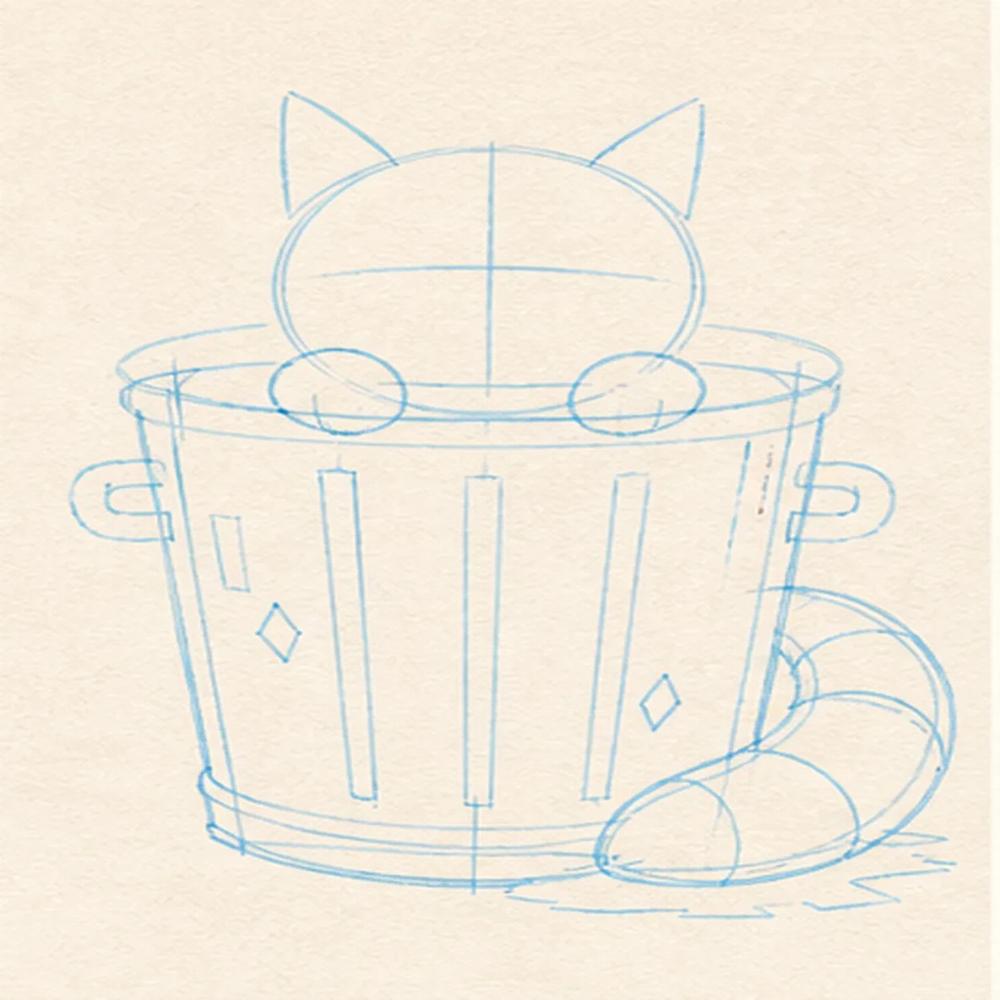
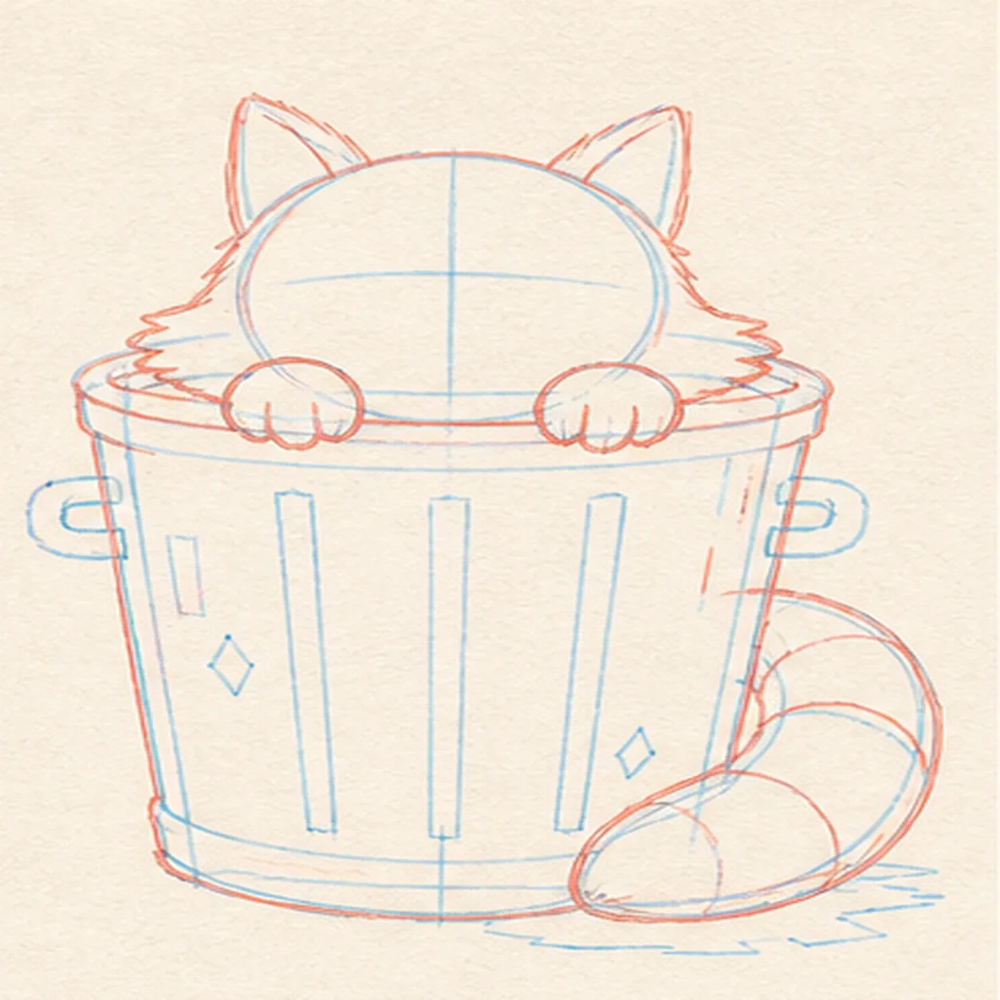
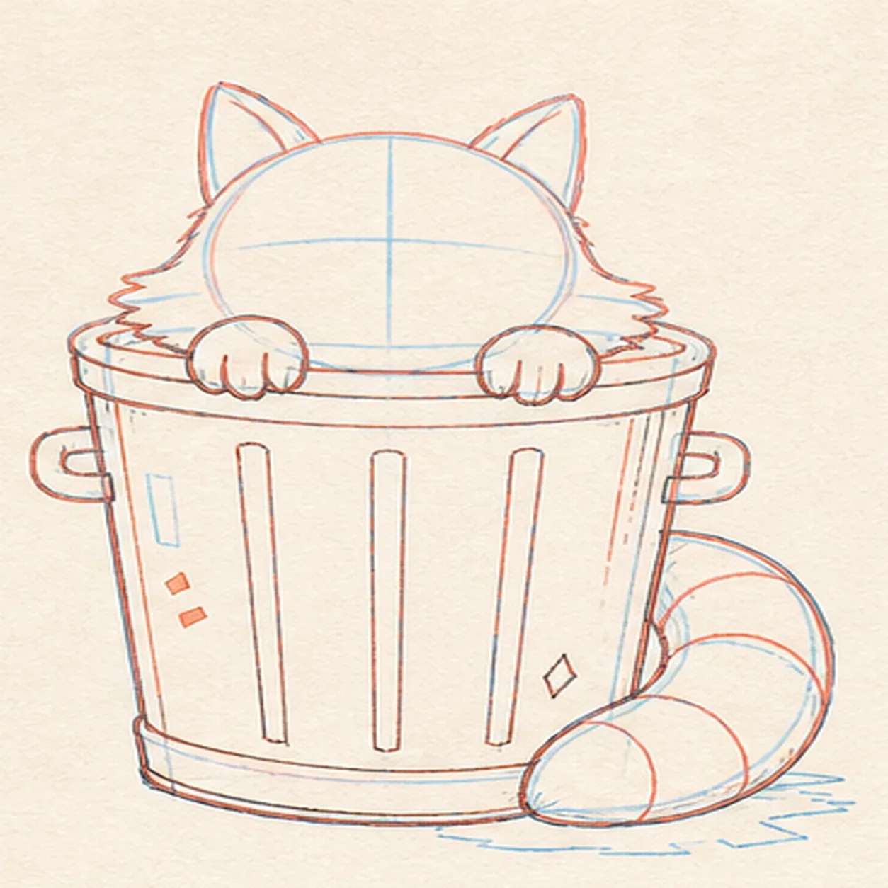
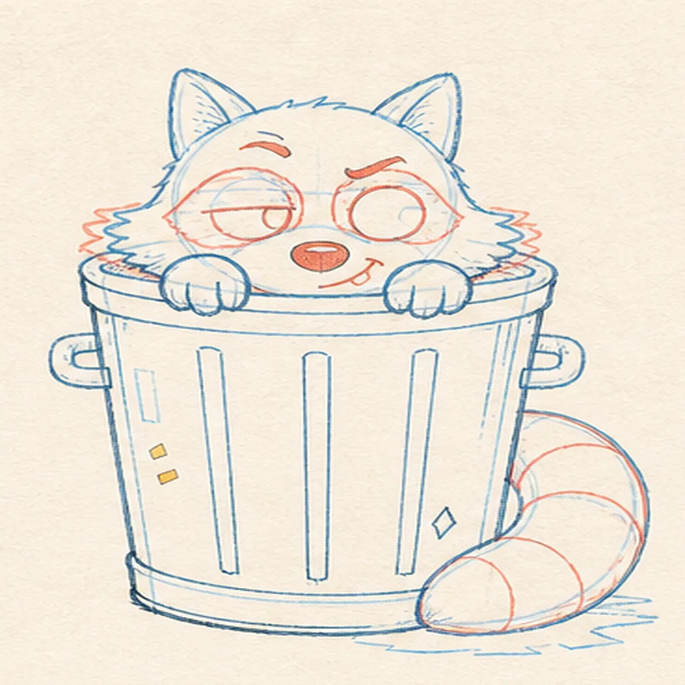
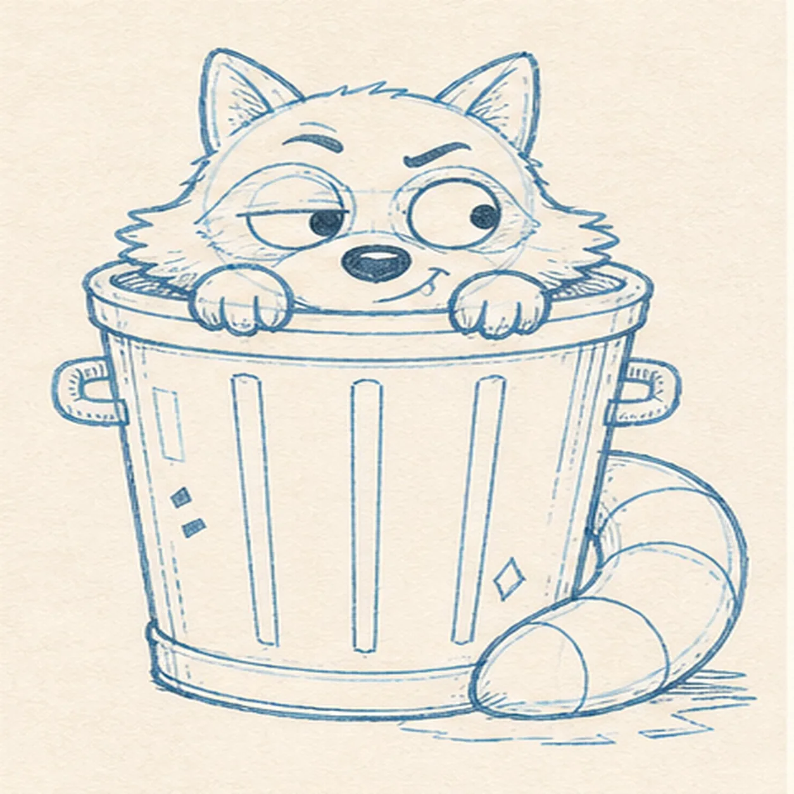
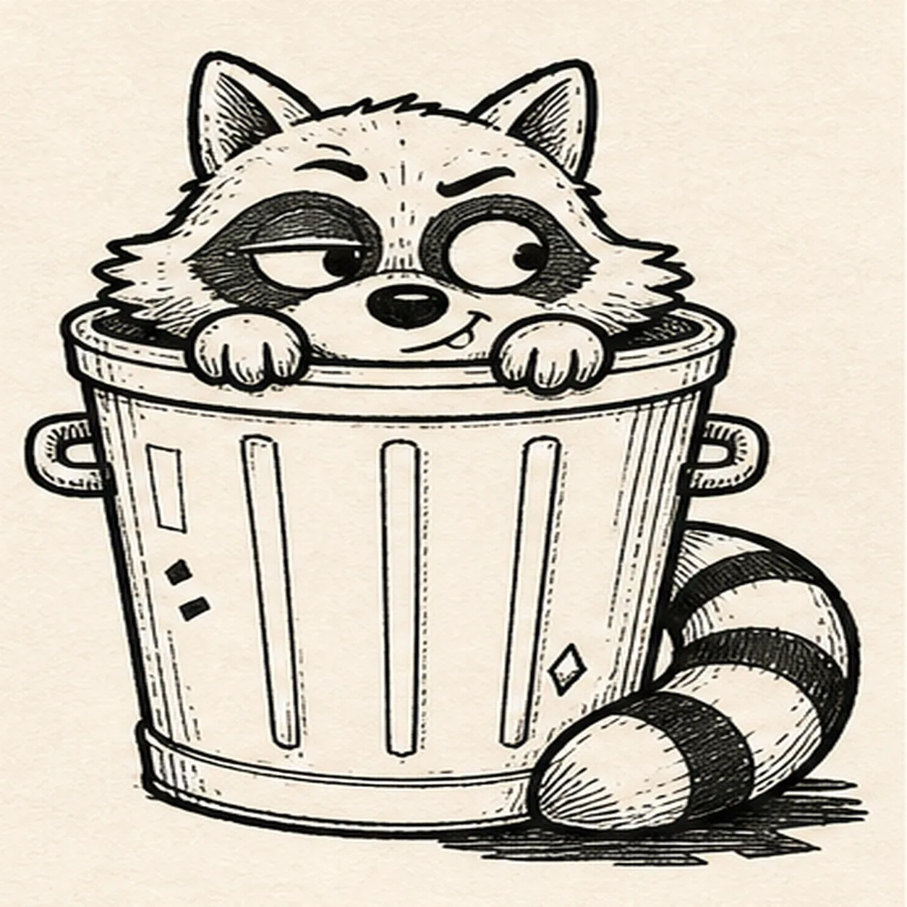
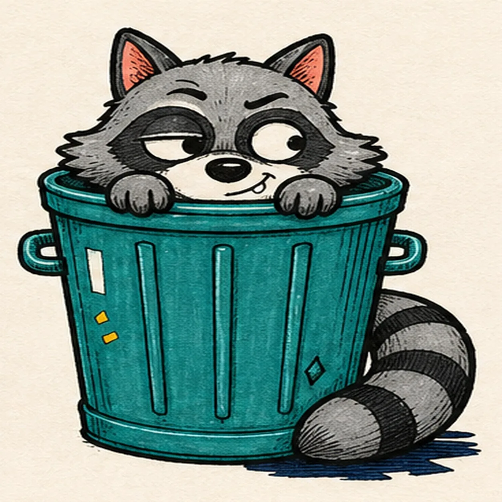

Felt-tip marker mode
Let's draw a raccoon peeking from a trash can
Treat this as one playful practice round: sketch the idea loosely, simplify the shapes, then commit with confident marker outlines and bright fills.
-
01

Map the midnight visitor
Use pale construction to place one tapered can, its oval rim, the raccoon head, two ears, two paw ovals, one curled tail route, face axes, two handles, four rib routes, one diamond dent, two accent blocks, one tall highlight, and a broken shadow footprint.
Marker tip: Ghost the can rim and head circle before touching down, then compare their widths. Reserve the head, both paws, and full tail route now so the rim and ribs can stop around them instead of becoming lines you must erase later.
-
02

Wrap the peeking silhouette
Add a loose contour for the open trash can, raccoon head, exactly two ears, exactly two paws gripping the rim, and one thick curled tail while preserving every face, hardware, rib, accent, highlight, and shadow route.
Marker tip: Pull the cheek tufts outward in a few broad points rather than tiny fur zigzags. Keep the back rim hidden behind the head, stop the front rim at both paws, and let the tail cross only the lower-right can area you reserved.
-
03

Fit the paws tail and can
Clarify the doubled rim, bottom band, exactly two handles, exactly four long ribs, rounded muzzle, both gripping paws, and the thick tail on the reserved construction.
Marker tip: Draw the paws before the front rim so their fingers sit on top, then rotate the page for the four long ribs. Stop every rib at the rim, paws, tail, or bottom band instead of drawing through an overlap.
-
04

Place the mask and tail bands
Add two asymmetric mask patches, two empty eye openings, one raised-brow route, the dark nose, a crooked grin with one small tooth, cheek-tuft guides, and exactly three unfilled tail-band guides.
Marker tip: Keep the two eye openings visibly different: one flatter and one rounder. Space the three tail bands around the curve, and trace the crooked grin in one relaxed pass so the expression feels sly rather than symmetrical.
-
05

Aim the side-eye and can details
Add both pupils glancing toward the page's right, keep one eye half-lidded and the other wider, clarify the raised brow and cheek tufts, then place one diamond dent, two accent blocks, one tall highlight, and the broken shadow.
Marker tip: Place both pupils before darkening either one and compare their direction across the nose. Keep the tall highlight open, the two accent blocks separate, and the shadow outside the can and tail silhouettes.
-
06

Ink the sneaky keeper drawing
Trace only the established raccoon, can, expression, three tail bands, four ribs, dent, accents, highlight, and shadow with thick, slightly wobbly black felt-tip, then add restrained fur and metal hatching.
Marker tip: Ink the pupils, mask edges, fingers, and tail bands first, let them dry, then rotate the page for the long can contour and ribs. Use the heaviest line on the outside silhouette and lighter hatching inside.
-
07

Fill the alley-night color
Fill the established fur cool gray, masks and three tail bands charcoal, can teal, ear interiors coral, two accent blocks mustard, and shadow deep navy while preserving the tall paper highlight and visible marker streaks.
Marker tip: Pull teal strokes vertically with the can ribs and gray strokes outward through the cheek fur. Let adjacent fills dry before they touch, and work around the eye whites, tooth, and can highlight instead of covering them.
-
08
![Handmade felt-tip marker drawing of one mischievous cool-gray raccoon peeking from one open teal trash can with exactly two coral-lined ears, two asymmetric charcoal mask patches, one half-lidded eye and one wide eye glancing toward the right side of the page, one raised brow, one dark nose, one crooked grin with one small tooth, exactly two gray paws gripping the front rim, one curled gray tail with exactly three charcoal bands, exactly two can handles, exactly four long can ribs, one tall open-paper highlight, two mustard accent blocks, one diamond-shaped dent, thick imperfect black outlines, visible marker streaks, and one broken deep-navy shadow](../assets/raccoon-peeking-from-trash-can-finished-v1.webp)
Lock in the midnight mischief
Thicken selected established black edges, even the same marker fills, deepen the existing fur hatching and shadow, sharpen the tall highlight, and remove only pale guides that distract.
Marker tip: Count two ears, two eyes, two paws, one tooth, three tail bands, two handles, four ribs, two accent blocks, one dent, and one shadow before stopping. Change the can color or expression in your own version, but keep the overlap order and handmade grain.